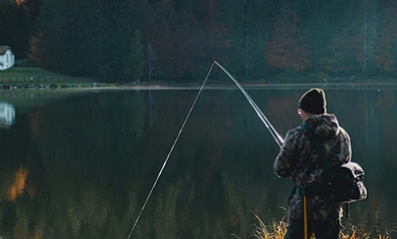
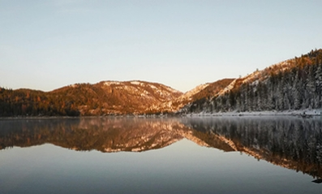

Throughout the changing seasons, Couples Resort offers an array of activities designed to enchant guests year-round. In the rejuvenating embrace of spring, couples can immerse themselves in the awakening wilderness surrounding Soyers Lake. Take leisurely walks along the tranquil shores or venture into the nearby Algonquin Park to witness nature’s rebirth amidst vibrant wildflowers and cascading waterfalls. As the landscape transitions into the fiery hues of fall, guests are invited to savor the breathtaking foliage of the Haliburton Highlands. Whether exploring wooded trails hand in hand or indulging in cozy evenings by the wood-burning fireplace in their uniquely designed cottage, couples can revel in the romance of the autumnal splendor.
Inner Content
Hero
Book Now
Couples Resort
Meet our Activities!
Text about Activities
Season Activities
Park Hero
Couples Resort
Algonquin Park
Text about Algonquin Park
Nestled in the heart of the majestic Algonquin Park, Couples Resort offers guests an unparalleled opportunity to immerse themselves in the pristine beauty of one of Ontario's most iconic natural wonders. As the first provincial park in Ontario, Algonquin Park boasts a rich heritage dating back to 1893, encompassing 7,630 square kilometers of untamed wilderness teeming with maple, pine, and a diverse array of wildlife including moose and wolves. Glacial remnants sculpted the rugged terrain, leaving behind towering rock formations and spring-fed lakes that add to the park's dramatic allure, offering a sanctuary of tranquility far removed from the hustle and bustle of city life.
From the tranquil shores of Soyers Lake, guests at Couples Resort are mere steps away from the breathtaking grandeur of Algonquin Park. Whether embarking on guided nature walks to discover hidden treasures or venturing out for a day of canoeing on crystal-clear lakes, there's no shortage of activities to explore in this natural playground. Experience the thrill of catching sight of elusive wildlife in their natural habitat or simply bask in the serenity of the pristine surroundings. With its deep blue skies, lush green forests, and hundreds of pristine lakes, Algonquin Park is a haven that represents an unforgettable retreat amidst the unparalleled beauty of the Canadian wilderness.
Park Activities
17 Hiking Trails (from casual to ambitious)
Canoeing (from paddle to portage)
Widlife Spotting (from loon to moose)
Visitor Centre for information & activities
Art Centre & Logging Museum
Algonquin Art Gallery
Situated a mere 15-minute drive from Bear Trail Couples Resort, the awe-inspiring $10 million Visitor Centre and Gallery stands as a testament to Algonquin Park's rich history and natural splendor. Originally erected in honor of Algonquin's centennial in 1993, this magnificent facility boasts world-class exhibits that intricately detail the park's profound natural and human heritage. Beyond its architectural grandeur, the Visitor Centre serves as a gateway for visitors to delve into the extensive legacy of Algonquin Park, which has inspired over 40 books, 1,800 scientific papers, a myriad of artistic endeavors including the works of Tom Thomson and the Group of Seven, and even a symphony. Additionally, the park offers a plethora of recreational activities that allow guests to immerse themselves in its pristine natural setting, ensuring an enriching and unforgettable experience for all who venture within its boundaries.
Algonquin Park
Fishing

Nestled in the heart of the majestic Algonquin Park, Couples Resort offers guests an unparalleled opportunity to immerse themselves in the pristine beauty of one of Ontario's most iconic natural wonders. As the first provincial park in Ontario, Algonquin Park boasts a rich heritage dating back to 1893, encompassing 7,630 square kilometers of untamed wilderness teeming with maple, pine, and a diverse array of wildlife including moose and wolves. Glacial remnants sculpted the rugged terrain, leaving behind towering rock formations and spring-fed lakes that add to the park's dramatic allure, offering a sanctuary of tranquility far removed from the hustle and bustle of city life.
Algonquin Park
Galeairy Lake

Nestled along the tranquil shores of Galeairy Lake, Couples Resort offers direct access to the pristine wilderness of Algonquin Park. Galeairy Lake spans 11 kilometers (7 miles) and is predominantly situated within the boundaries of Algonquin Park. Guests can embark on serene canoe or kayak excursions to explore the lake's numerous secluded coves, where wildlife such as loons, beavers, otters, and moose may be spotted. With its exceptional cleanliness and safety standards, Galeairy Lake offers an idyllic setting for aquatic enjoyment, boasting water temperatures reaching 25°C (78°F) by late July and consistently staying above 18°C (70°F) from the third week of June to the first week of September.